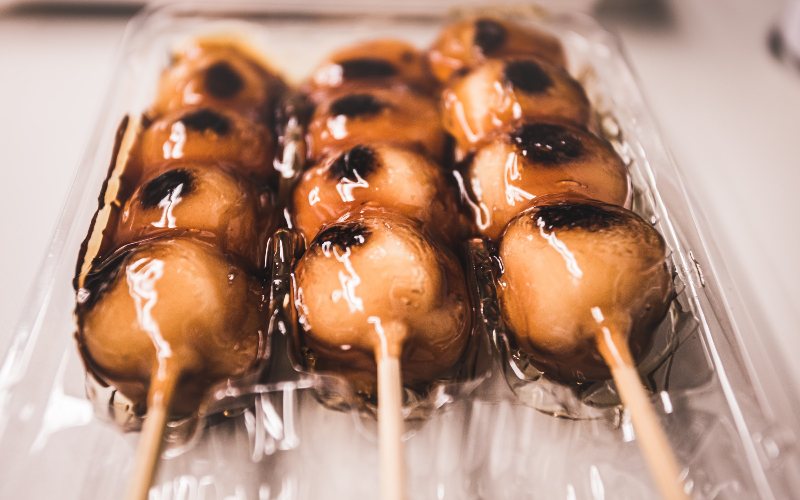
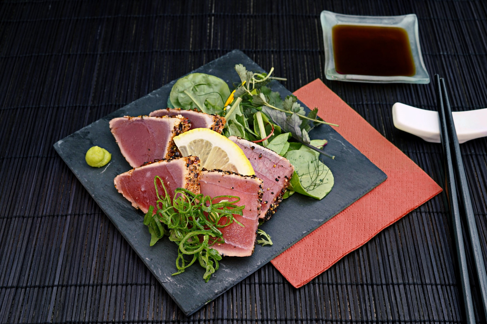
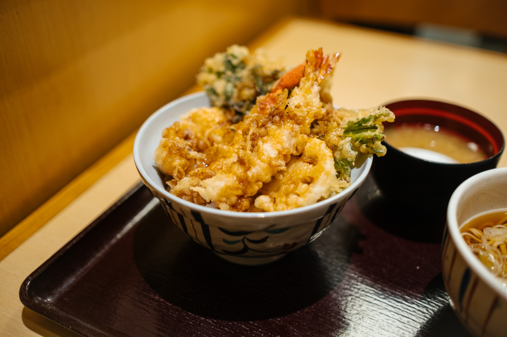

Top 3 Japan Cuisines!
1. Dango
Dango (団子) is a Japanese dumpling made from rice flour mixed with uruchi rice flour and glutinous rice flour. It is different from the method of making mochi, which is made after steaming glutinous rice. Dango is usually finished round shaped, three to five dango are often served on a skewer (skewered dango pieces called kushi-dango (串団子)). Generally, dango comes under the category of wagashi, and is often served with green tea. It is eaten year-round, but the different varieties are traditionally eaten in given seasons.
2. Sashimi
The word sashimi means "pierced body", i.e. "刺身" = sashimi, where 刺 し = sashi (pierced, stuck) and 身 = mi (body, meat). This word dates from the Muromachi period and was possibly coined when the word "切る" = kiru (cut), the culinary step, was considered too inauspicious to be used by anyone other than samurai. This word may derive from the culinary practice of sticking the fish's tail and fin to the slices for the purpose of identifying the fish being eaten.
3. Tenpura Udon
Tempura Udon is a delicious Udon noodle soup with Tempura. Udon is a Japanese noodle made from wheat. It is a thick and chewy noodle. The udon noodle is served with an umami-rich simple soup. It is then topped with tempura shrimp or Kakiage tempura.